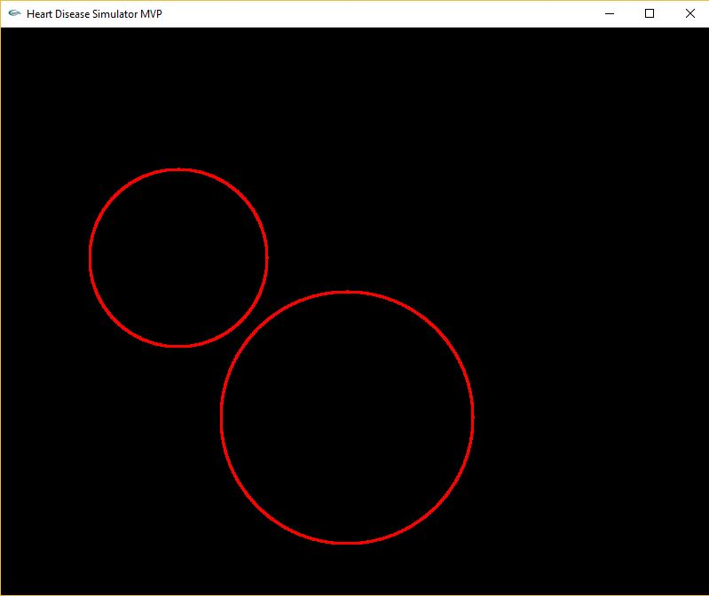

The Minimally Viable Product (MVP) for my Intro to Computer Graphics course. To run, extract the contents and navigate to HeartSimulatorMVP/FinalProjectSandBox/Debug and run the executable file. The top circle represents the contraction of the right atrium, the bottom circle the right ventricle. To change the heart condition being simulated, left click on the mouse and select a menu option--Bradycardia, Tachycardia, AV Conduction Block, or Normal Sinus Rhythm.

An animation of a Bezier Curve with four control points, or a cubic Bezier Curve. A Bezier Curve demonstrates a linear interpolation of a number of points. As the time domain increases from 0-1, the curve moves from the left most point, to the right most. While I think the math behind this is pretty cool, the part I like most about this project is how relaxing I find the color scheme and animation. To run, download the project zip file, extract all the files, and run the executable file. You may need to ignore any security software warnings. I promise I'm not trying to kill your computer.

An arcade game project that I competed in my freshman programming class. Programmed in Java. To run, download the executable, Unzip the contents, and click on Frogger.jar to run. I will admit, this was not my most impressive project aesthetically. However, I am still immensely proud of what I was able to accomplish given my programming inexperience.